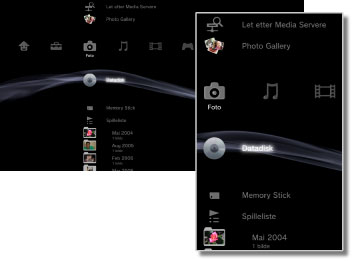

Foto > Kategorien Foto
Kategorien Foto
Følgende ikoner vises under  (Foto). Ikonene som vises, varierer avhengig av bruksvilkårene.
(Foto). Ikonene som vises, varierer avhengig av bruksvilkårene.

 |
Let etter Media Servere | Innlede et søk etter DLNA Media Servers som er tilkoplet det samme nettverket. |
|---|---|---|
 |
Bruke Photo Gallery | Bruk dette programmet til å gjøre det enda mer spennende å vise fotografier som er lagret på PS3™-systemet. |
 |
Lagre skjermbilde | Lagre skjermbilder fra PlayStation®3 Formatering programvare under spilling. Dette alternativet er tilgjengelig bare når programvaren som spilles, støtter denne funksjonen. |
 |
Media Server | Kople til DLNA Media Servers og vise de lagrede bildene. Ikonet som vises varierer avhengig av type server. |
  |
Datadisk | Vise bildefiler som er lagret på kompatible, skrivbare diskmedia slik som en CD-R eller DVD-R. |
 |
Memory Stick™ | Vis bildefiler som er lagret på Memory Stick™-medier.* |
 |
SD Memory Card | Vis bildefiler som er lagret på et SD-minnekort.* |
 |
CompactFlash® | Vis bildefiler som er lagret på CompactFlash®.* |
 |
PSP™(PlayStation®Portable) | Vis bildefiler som er lagret på et Memory Stick™-medie i PSP™-systemet. |
 |
PSP™(PlayStation®Portable) | Vis bildefiler som er lagret i PSP™go-systemets systemminne. |
 |
Digitalkamera | Vis bildefiler som er lagret på et digitalkamera som er kompatibelt med PS3™-systemet. |
 |
WALKMAN®/ATRAC Audio Device (WALKMAN®) | Vis bildefiler som er lagret på en WALKMAN®/ATRAC Audio Device (WALKMAN®). |
 |
ATRAC Audio Device | Vis bildefiler som er lagret på en ATRAC audio device. |
 |
USB enhet | Vis bildefiler som er lagret på en USB-masselagringsenhet. |
 |
Spilleliste | Du kan opprette spillelister, endre eller spille av spillelister som har blitt opprettet. |
 |
Digitalkamera bilder | Vis bildefiler som er lagret i DCIM-mappen i et digitalkamera. |
|
(mappe) | Dette ikonet vises når det er mapper som ble opprettet på en PC. |
 |
(filer som er lagret på harddisken) | Vis bildefiler som er lagret på PS3™-systemets harddisk. Miniatyrbilder vises. |
| * |
Det kreves en kompatibel USB-adapter (følger ikke med) for å bruke lagringsmedier med enkelte modeller. Når den brukes med en USB-adapter, vises lagringsmediene som |
|---|
 (USB-enhet).
(USB-enhet).Tips
- For detaljer om DLNA, se
 (Innstillinger) >
(Innstillinger) >  (Nettverksinnstillinger) > [Media Server kontakt] denne veiledningen.
(Nettverksinnstillinger) > [Media Server kontakt] denne veiledningen. - I sjeldne tilfeller, kan ikke disker og andre media operere skikkelig når de spilles på PS3™ systemet. Dette er hovedsakelig på grunn av produksjonsprosessen eller krypteringen av programvaren.